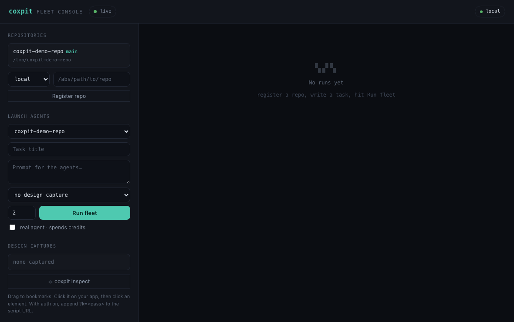
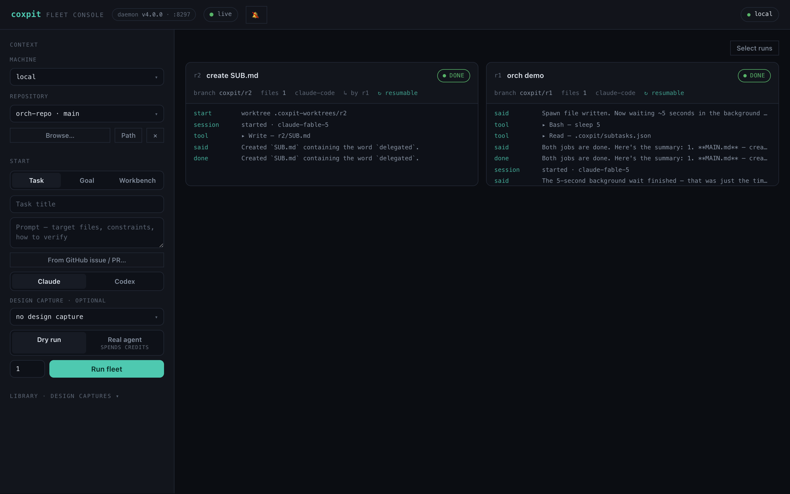
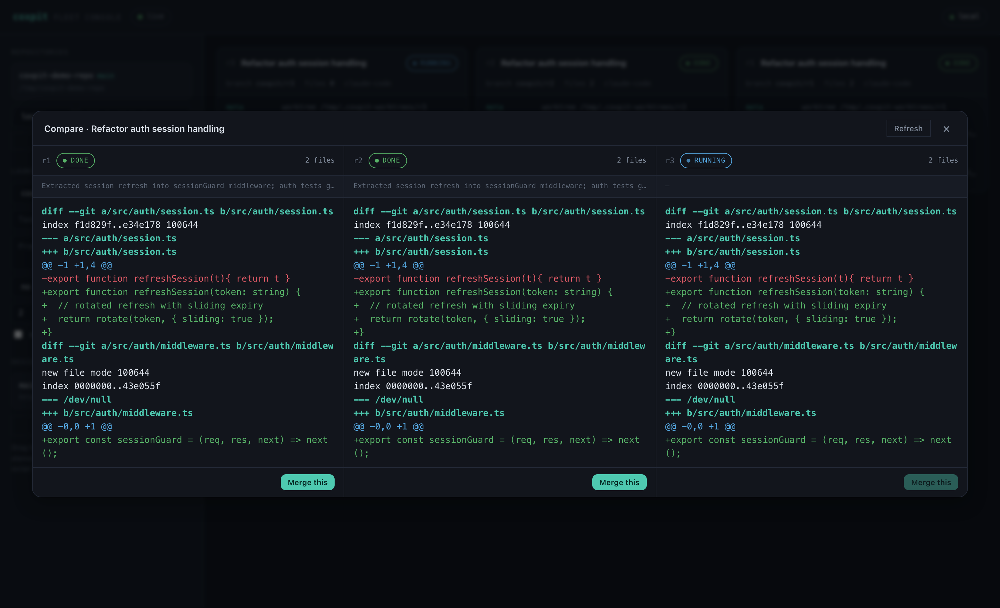
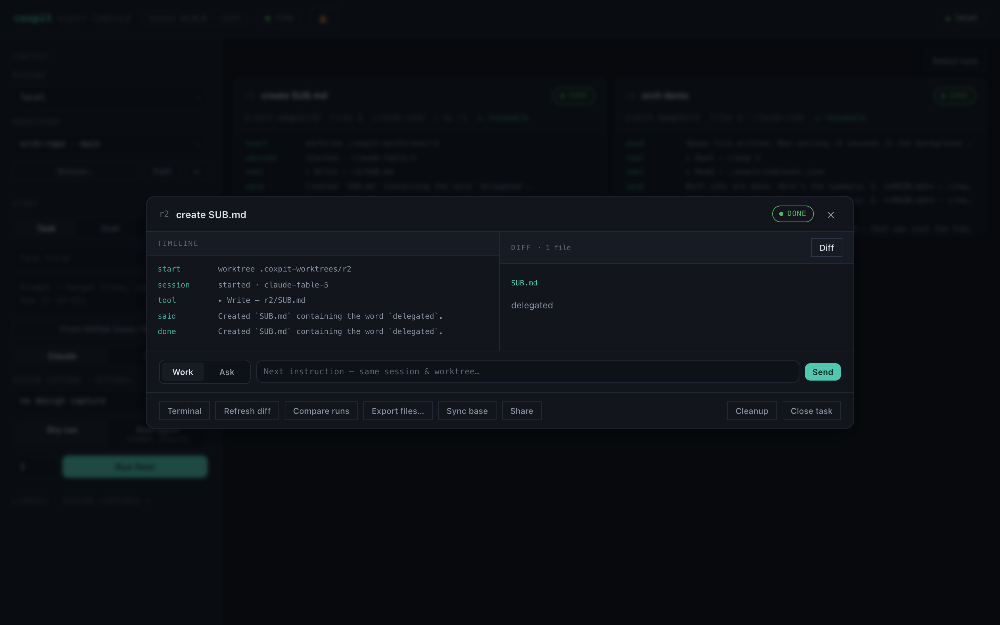
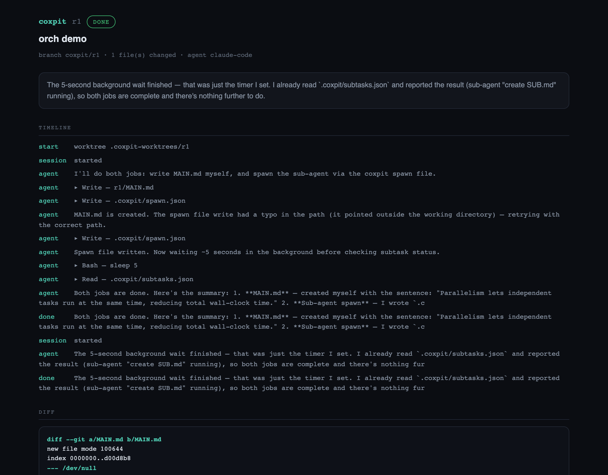
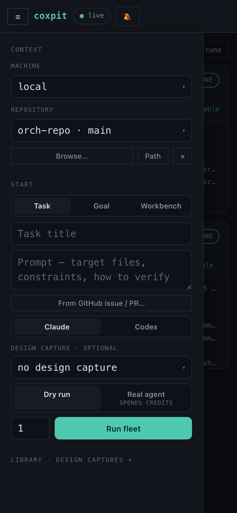

Own your agent fleet.
Run parallel AI coding agents — Claude Code and Codex — across your own machines, each in an isolated git worktree. Watch them live, compare their diffs, attach a terminal, merge the winner. Agents can even spawn their own sub-agents. Self-hosted. Your code never leaves your network.
MIT · Node 20+ · Claude Code & Codex · macOS / Linux / Windows(WSL)
What it does
One task. N agents. You pick the winner.
Every run is isolated — its own git worktree, its own branch, its own tmux session. Agents can't touch your checkout, and you can watch or interrupt any of them.
×N Fleet runs
Launch the same task on multiple agents in parallel. Each run streams its progress to the board in real time over WebSocket.
⑂ Two providers
Claude Code and OpenAI Codex, selectable per launch. Fan the same task across both and compare — steering resumes each agent's own session.
⟳ Self-orchestrating
A run can spawn its own sub-agents by writing .coxpit/spawn.json — the daemon launches isolated sub-runs and feeds live status back. Orchestration inside the agent's loop.
⇄ Compare & merge
All runs side by side with colorized diffs, plus an AI review judge that digests every approach. Merge the winner — clean-base guard, conflict auto-abort.
▤ Doc mode
When a run changes a Markdown or HTML file, a Rendered toggle appears in the diff pane — see the formatted output instead of the patch. Snapshotted, so it survives merge and close.
>_ Real terminal
Full-screen terminal with session tabs over tmux. On phones, an IME-safe input bar composes 한글/かな natively and ships whole lines.
◱ Start a new project
Point coxpit at an empty folder — it makes the base commit, then a fleet scaffolds the project in parallel. Compare the foundations, keep the best. Existing folders are never touched.
◫ Pocket board
The launcher folds into a drawer, modals go full-bleed, and /?run=N deep links land straight on a run — steer the fleet from your sofa.
🔗 Remote access
One click puts the board on your Tailscale (HTTPS, no port, your devices only). Or copy a Cloudflare/reverse-proxy recipe. coxpit drives your tools — it never hosts a relay.
⌖ Design Mode
Click an element in your running app with the inspect bookmarklet — its selector, HTML and computed styles are injected into the agents' prompt.
⌂ Multi-machine
Register remote machines over SSH (Tailscale/LAN). Probe reachability, run fleets on your desktop from your laptop — or your phone.
◼ Safe by default
Dry-run mode exercises the whole pipeline without spending credits. Auth is fail-closed. Task close cleans every worktree — and warns before it drops unmerged work.
The swarm
Agents that spawn agents.
Default agent sandboxes block network calls — so the orchestration protocol is a file. The agent writes a spawn request into its own worktree; the daemon does the rest. No permission escalation, works with both providers.
task ─► r1 (agent, isolated worktree) │ writes .coxpit/spawn.json {"title":"…","prompt":"…","count":1} ▼ daemon picks it up (~2s) ─► launches r2 · r3 as isolated sub-runs │ ▼ keeps .coxpit/subtasks.json fresh — the agent reads it for live status

In action
Compare, review, share.
Every run of a task side by side · rendered document review instead of raw diffs · a read-only share page for anyone you choose.





Quickstart
Running in a minute.
Requirements: Node 20+, git, tmux, and an agent CLI on PATH (Claude Code first — install it and sign in once with claude; coxpit drives your CLI with its own login, no keys stored).
# fastest — straight from npm $ npx coxpit # → http://127.0.0.1:8210 # or docker (ghcr image) $ docker run -p 127.0.0.1:8210:8210 -v coxpit:/data ghcr.io/hanmariyang/coxpit # or from source $ git clone https://github.com/hanmariyang/coxpit-oss && cd coxpit-oss $ npm install && npm run dev
New here? The full guide walks through your first fleet, comparing and merging, and every feature above.
Download
Desktop app.
The desktop app embeds the daemon and opens the board in its own window — no terminal needed. Installers are built per release.
All downloads land on the latest GitHub Release. Prefer the CLI? npm i -g coxpit && coxpit · self-host the daemon anywhere Node runs.